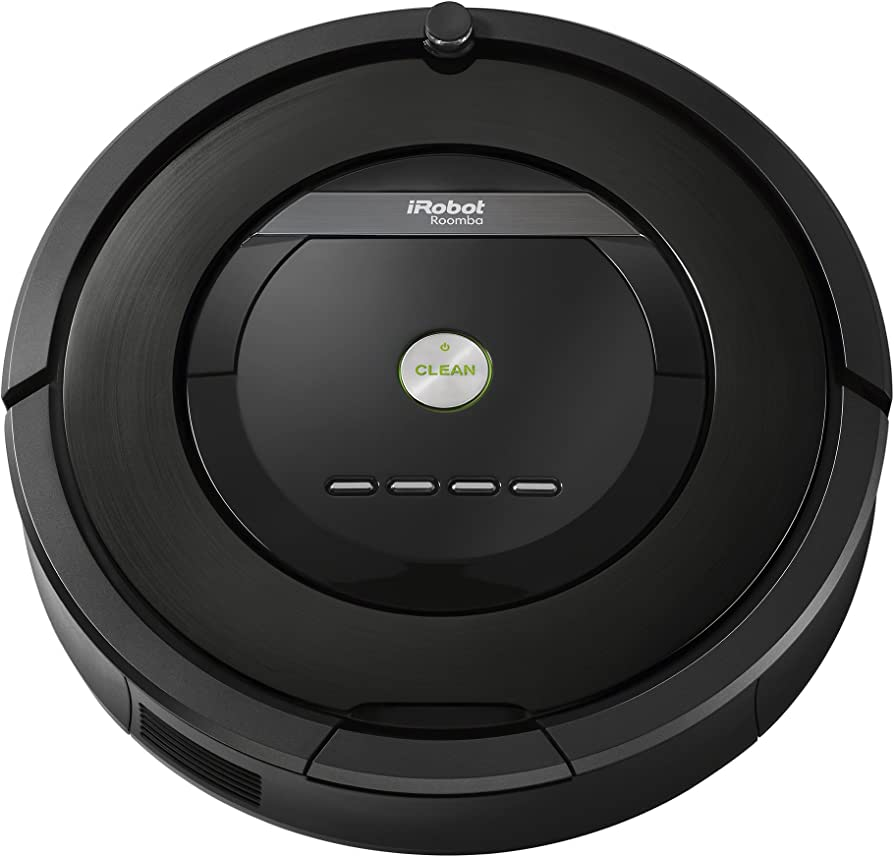

Abstract
This project presents a vision-based object detection and tracking system that employs a Tello drone for tracking and an iRobot as the target object. The system incorporates the YOLOv5 deep learning model, trained on a custom dataset of iRobot images, for accurate object detection in real-time. A combination of centroid tracking and PID control algorithms is used to manage the drone's movement. The drone autonomously maintains a safe distance from the iRobot while following it through various environments.
Motivation and Project Applications
The proposed vision-based object detection and tracking system has numerous potential applications across various industries and domains, such as surveillance and security, search and rescue operations, wildlife observation and research, inspection and monitoring, autonomous navigation, sports and entertainment, and retail and inventory management.
Objectives and Deliverables
This project is guided by two primary objectives: implementing an accurate object detection system for iRobot, and combining the object detection system with a tracking system for accurately tracking the iRobot. The key deliverables resulting from this project include a custom-trained YOLOv5 model for iRobot detection, an integrated object detection and tracking system, and a system performance evaluation.
Implementation and Results
To achieve the project objectives, we trained the YOLOv5 model on a custom dataset of iRobot images and integrated it with centroid tracking and PID control algorithms to ensure smooth and precise tracking of the iRobot by the Tello drone. We evaluated the system's performance using the custom dataset, which contains images of the iRobot in a diverse range of indoor and outdoor settings, under different lighting conditions and orientations.
We have included some images and videos of the Tello drone and iRobot, as well as results of our testing, for your reference:

- 